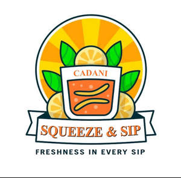

Trade Mark Journal No.2025/017 25 April 2025
UK00004186703 10 April 2025 (1,7,32,43)

- Class 1
- Enzymes for use in the manufacture of fruit juice.
- Class 7
- Juice extracting machines.
- Class 32
- Juice drinks; Orange juice drinks; Fruit juice drinks; Apple juice drinks; Orange juice beverages; Fruit juice beverages; Fruit juice for use as beverages; Pomegranate juice; Pineapple juice beverages; Tomato juice [beverage]; Fruit juice; Juice (Fruit -); Grape juice beverages; Orange juice; Grapefruit juice; Tomato juice beverages; Apple juice beverages; Non-alcoholic sparkling fruit juice drinks; Watermelon juice; Mango juice; Non-alcoholic vegetable juice drinks; Ginger juice beverages; Melon juice; Coconut juice; Guava juice; Aloe juice beverages; Lemon juice for use in the preparation of beverages; Grape juice; Cranberry juice; Fruit juice beverages (Non-alcoholic -); Non-alcoholic fruit juice beverages; Blackcurrant juice; Lime juice for use in the preparation of beverages; Non-alcoholic grape juice beverages; Green vegetable juice beverages; Vegetable juice; Red ginseng juice beverages; Fruit juice concentrates; Lime juice cordial; Organic fruit juice; Mixed fruit juice; Concentrated fruit juice; Smoked plum juice beverages; Fruit drinks; Fruit flavored drinks; Fruit juice bases; Fruit flavoured drinks; Non-alcoholic fruit drinks; Fruit beverages and fruit juices; Non-alcoholic fruit cocktails; Smoothies [non-alcoholic fruit beverages]; Non-alcoholic beverages containing fruit juices; Vegetable juices [beverage]; Fruit flavored soft drinks; Frozen fruit drinks; Fruit flavoured carbonated drinks; Non-alcoholic fruit vinegar beverages; Vegetable drinks; Concentrates for making fruit drinks; Fruit juices; Non-alcoholic fruit punch.
- Class 43
- Juice bars; Juice bar services; Snack bar services; Bar services; Bar and restaurant services; Restaurant and bar services; Serving food and drink in restaurants and bars; Salad bars [restaurant services]; Bars.
SQUEEZE&SIP LTD